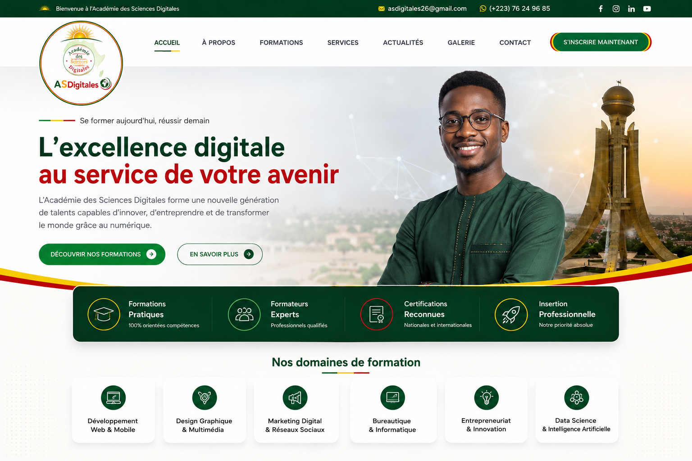

⌘
Informatique & bureautique
Word, Excel, PowerPoint, outils collaboratifs et culture numérique.
Voir le parcours →L’Académie des Sciences Digitales forme une nouvelle génération de talents capables d’innover, d’entreprendre et de transformer leur environnement grâce au numérique.

Des parcours conçus pour apprendre, pratiquer et progresser.
Word, Excel, PowerPoint, outils collaboratifs et culture numérique.
Voir le parcours →HTML, CSS, JavaScript et conception de sites modernes et responsives.
Voir le parcours →Comprendre les fondamentaux, utiliser les outils IA et travailler responsablement.
Voir le parcours →Stratégie de contenu, réseaux sociaux, visibilité et communication en ligne.
Voir le parcours →Identité visuelle, création graphique et production de contenus digitaux.
Voir le parcours →Idée, stratégie, modèle économique et outils pour entreprendre dans le numérique.
Voir le parcours →Rendre les compétences digitales plus accessibles et plus utiles aux jeunes, professionnels, entrepreneurs et organisations.
Choisissez une formation et échangez avec notre équipe pour construire votre parcours.
Nous contacter →